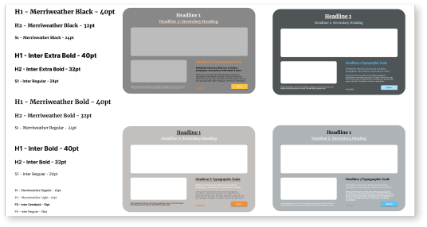
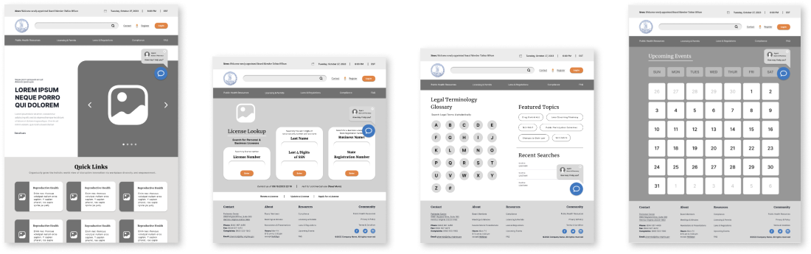
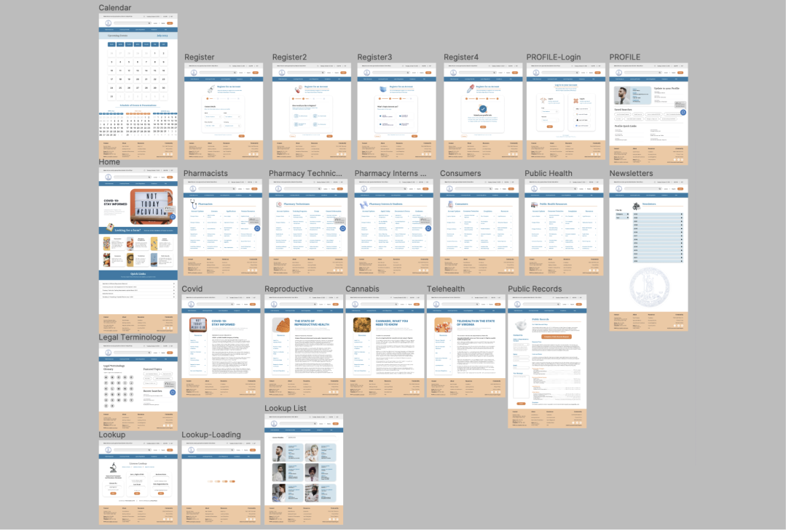
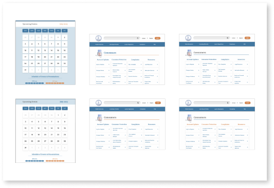
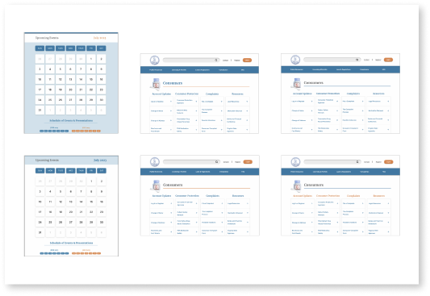
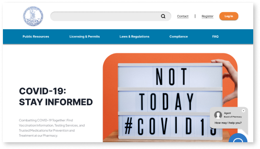
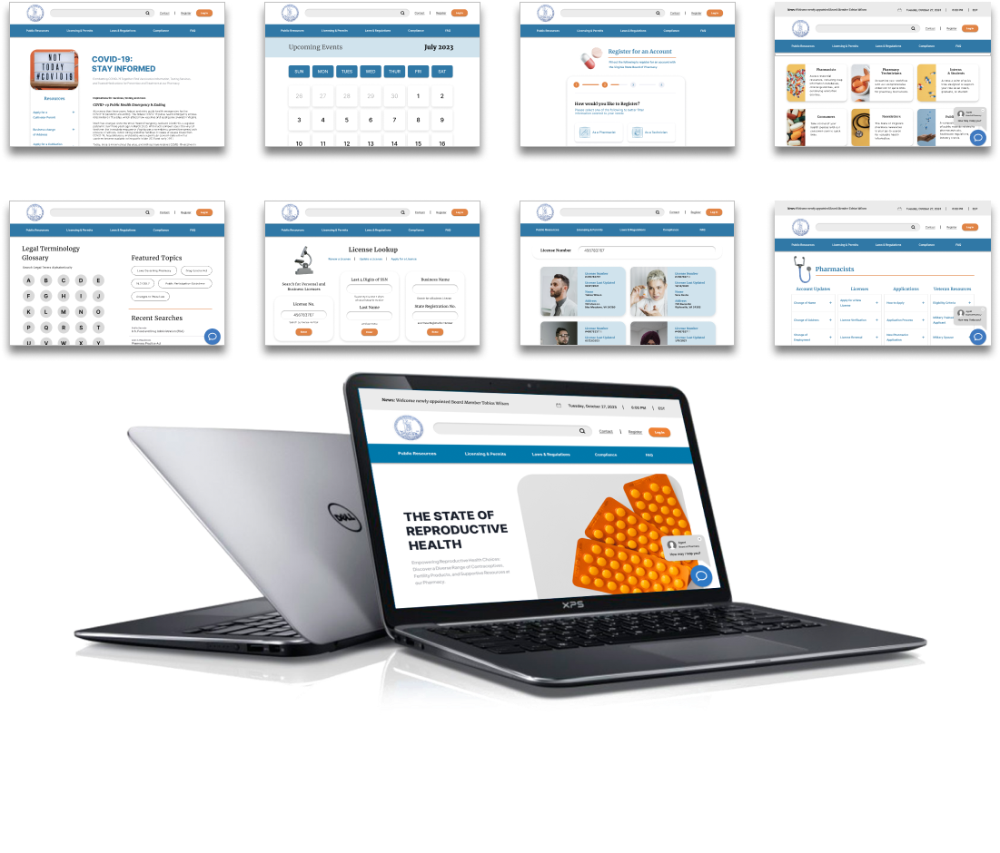

Virginia Board of Pharmacy
Government Agency Website Redesign
Virginia Board of Pharmacy
Government Agency Website Redesign
Government Agency Website Redesign Case Study
UX/
UI Design Challenge
Project Overview
Select a government agency and complete the design process to create a responsive web solution. Research pain points & sythesize the data in order to understand users & address the design problem. Analyze how users navigate the responsive web design (RWD) in order to wireframe, design, prototype, & test a new IA for the most user-centered interface system.
Problem
The Virginia Board of Pharmacy website is outdated & not user-friendly, leading to confusion, frustration, & possible harm to patients. This can make it difficult for users to navigate the complex healthcare system, leading to delays in treatment and potentially worsening health outcomes.
Solution
Redesign the website to help users navigate and search for information efficiently. Include a chat with an agent feature and create a dynamic search engine in order to reduce the challenges that users face allowing them to make educated decisions and work efficiently.
Project Type
Timeline
My Roles
Platform
Tools Used

1
2
3
4
5
6
7

1
2
3
4
5
6
7
Research Plan and Methodology
My partner and I began this project by developing a research plan. We first gathered our own data online by looking up facts, statistics, and other infromation from reputable sources.
We then created a survey in order to learn how we could redesign the Board of Pharmacy website to help pharmacists and other users navigate and search through information more efficiently to find what they need.
Our participants consisted of 4 users between the ages of 25-35; a pharmacist, a pharmacy technician, a pharmacy manager, and a pharmaceutical sales representative, who all commonly use State Board of Pharmacy websites.
From this survey, we discovered that it would be helpful to include a chat with an agent feature, explanations of legal terminology, a section featuring the most viewed topics and searches, and a dynamic search engine to efficiently find answers.
“State board websites are confusing. There are no clear cut answers.”
- Participant 1
“It’s hard to understand if you don't have a legal background.”
- Participant 2
“There’s zero consistency for website organization
or law writing.”
- Participant 3
“You have to go down a lot of rabbit holes to access different topics.”
- Participant 4
Current Website Analysis
You can’t improve a website without first understanding what needs improvement. That’s why before we started the design process, my partner and I conducted a thorough analysis of the current Virginia Board of Pharmacy website.
Website Annotations Analysis
By picking apart the current website, we were able to pay attention to detail in order to see what needed improvement. We found that the current website was difficult to navigate, hard to find information, not aesthetically pleasing, had inadequate functionality, & an overall poor user experience.


User Path Analysis
Using our survey data, we determined what our users are mainly doing when visiting the current website and we then defined happy paths to focus on in our own design. Some of these paths included looking up a license, searching laws and regulations, and updating licenses.
Heuristic Analysis
Doing a heuristic analysis made it easy to see that the Virginia Board of Pharmacy website relies primarily on category and hierarchy based information organization.
User Interface Analysis
To analyze the interface itself to see where Virginia’s Board of Pharmacy site is lacking, we completed an interfae analysis by focusing on accessibility. This showed that the current website contained many issues including link errors, contrast errors, 48 generalized errors, speed issues, layout and formatting issues, and TBT.

1
2
3
4
5
6
7
Proto Personas
Before we did our research, we created proto personas based off our assumptions of who my users are. We chose to create two proto-personas to include both users in the pharmaceutical industry as well as regular consumers looking for information.
Stanley Anderson:
Pharmacy Technician

Monica Gilmore:
Consumer

User Persona
After we finished analyzing our reserach data, we used our results to create a user persona based off the information we gathered from our participants. Meet Tobias Wilson, a pharmacist from Virginia who wants to be able to easily navigate and search for information on the Board of Pharmacy website but feels the website is confusing & doesn’t provide clear answers.
Tobias Wilson:
Pharmacist

1
2
3
4
5
6
7
Project Motivation
To get inspired for this website redesign, we dug even deeper into the industry to define the importance of having a functional and inviting website. With the rapid growth of the Telehealth industry, healthcare professionals are finding it harder to stay up-to-date on regulatory needs. lack of organization and consistency makes it difficult to find relevant information and understand legal terminology. These problems may contribute to the global increase of medication errors, with an associated cost of $42 billion*. With specialty medications on the market increasing by more than 1200% since the 1990s*, and with the pandemic fueling an increased demand and contributing to numerous regional shortages, it’s crucial for pharmacists to be able to easily access current and accurate information. These frustrations may contribute to the 61% of pharmacists that report experiencing a high level of burnout in their practice +.
+ pharmacist.com
* www.wolterskluwer.com
^ singlecare.com
Problem Statement
The current state of medical needs and policies in the United States is causing an increase in the number of people who need access to crucial information about their healthcare. However, many if these state websites, such as the Virginia State Board of Pharmacy, are inefficient and the lack of streamlined processes and clear informaiton can lead to confusion, frustration, and even dangerous situations for both patients and healthcare professionals.
Our Goal
Create a more inviting & user-friendly website that will increase efficiency for patients and professionals in order to help them navigate the website and find pertinent informaiton. Including a chat with an agent feature and a dynamic search engine will help to reduce the challenges users face by providing quick answers to questions, being able to easily find results such as different laws and regulations, as well as explanations of legal terminology.
1
2
3
4
5
6
7
Mood Board
In the ideation phase of the design process, we began brainstorming themes for our website redesign by creating a mood board to get our vision started. We gathered images that caught our attention and that we felt grasped the idea we were going for. Our color choice was based off of what message we felt each color portrayed. We chose orange because it is eye-catching and felt it represented confidence and optimism to create a welcoming environment. We chose blue to represent reliability and cleanliness.

Typography Samples
To decide on fonts we used dot (or star) voting and we each choose our three favorite fonts out of our font selection. We agreed on Merriweather for headings and Inter for body text.

Hierarchy Samples
With our fonts and colors chosen, we created hierarchy samples to determine what styles of fonts to use, where to use the colors, and to see what our layout might look like.
Style Guide
To keep all our design elements together & easily accessible, we created a style guide labeling the colors and fonts of our theme.

1
2
3
4
5
6
7

Card Sorting
To begin the prototyping process, we first started by card sorting the layout of our upcoming website redesign. The Virginia State Department of Pharmacy website is difficult to navigate, even for industry professionals, so we wanted to focus on simplifying information and focusing on our user’s primary reason for using the site. Choosing a top navigation with strategically organized sub-navigation so as to not overwhelm the user with too many initial options.
New Sitemap
Next, we created a sitemap for our new website. This helped us address the challenges users face while navigating the website. As a resulte, the structure we opted for is designed to make the website’s overall navigation easier.
To break down the navigation to better suit the needs of the website’s typical user, we focused on 4 main categories.
Sketches
After analyzing the original website & deciding what to include in our own based off of user needs, we began sketching out what our website might look like. By using card sorting and sitemap layout, we organized our features based on content, navigation, and categories that would be most beneficial to our users, while also considering the look and appeal of the design itself.

Digital Wireframes
When creating our interactive wireframes, we designed the website to feel aproachable, expressing that through the bright & rounded elements. We wanted to highlight the chat with an agent feature, license look-up and legal terminology glossary.
Components
From our wirframes we created components to add into the high fidelity prototype of our website redesign.

Assets
We also laid out all of our assets that we would be using for our interface so that they were easily accessible.

Clickable Prototype
With our wireframes completed and our assets and components created, we developed a clickable prototype of our website to prepare for the testing portion of the design process.

1
2
3
4
5
6
7
A/B Testing
Using A/B testing helped us to make decisions and see what our users liked the best. Most of our A/B testing was based upon the look and feel of the design including the color and layout. This helped us to make decisions based off user preferences.
 

User Testing
To test our prototype we gave participants 3 tasks to further analyze the usability and experience of our website. We then evaluated the success criteria & key findings from the result of our participants completing these goals. The tasks included:
Iterations
By having our participants complete these tasks, we found different problems that were easily fixable. These problems consisted of: the drop down menu falling behind content, inability to un-click button options during registration, as
well as some users found the look of the quick links drop down at the bottom of the home screen to be odd and lacking an outline. Despite these issues, our participants were still able to complete all tasks successfully & we were able to make iterations based off of their feedback.
1
2
3
4
5
6
7

Key Takeaways
When I was told I had to redesign a government agency website, my original thought was that this project would be unexciting to say the least. However, to my pleasant surprise, the work of UX/UI design always manages to keep me engaged and outdid itself again and always manages to keep me engaged & amazed.
This project continued to show me how important the design process is and how research can really help to target and solve pain points users experience when using any application. I also learned more about the pharmacy industry and why efficiency and staying informed on medicinal matters is so important.
I hope that this redesign was successful in it’s ability to show the potential of creating a more user friendly experience and a more engaging interface by prioritizing user needs in navigation, organization, and appearance.
Before

After
Virginia Board of Pharmacy
